Volunteer Guide: Guest Check-in & Services
1 Welcome
Welcome to the Hope’s Corner Check-in App Tutorial! This guide is designed to help you quickly learn how to check in guests for meals, create new guest profiles, and assign shower and laundry slots to guests.
2 How do I access the app?
The app is already installed and logged in on all the tablets and the meal laptops at Hope’s Corner. Just tap the icon that looks like the one shown below:
3 Guest Search
The main screen you will use is the Guest Search & Check-In.
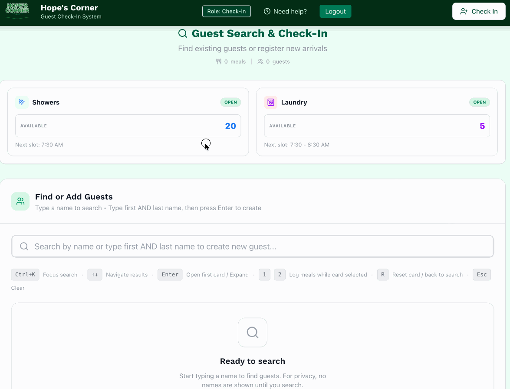
Search: Tap/click the search bar at the top and type the guest’s First Name and/or Last Name.
- As you type, matching guest cards will appear below.
- You can search by just first name, just last name, or both in any order.
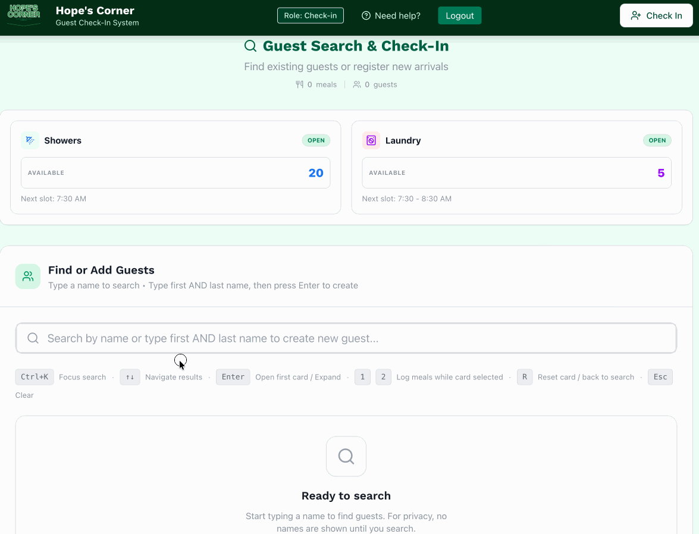
The search is now smarter and if you search by last name first followed by first name, or even middle name and first name it will still find the guest! As an example, if a guest is named “Xiang Chang Ying” and if you type “Ying Xiang” it will still find them.
4 Creating a new guest
- If a guest is not found after you type at least two words (e.g., first and last name — initials or full names are fine), the Create New Guest button will appear.
- Click on that button to open the Fast Create Guest form.
- The first and last name fields will be pre-filled from your search.
- You must select Housing Status, Age Group, Gender, and Location — these are the minimum required fields.
- Click on Save Guest to create the guest.
5 Assigning meals to guests
5.1 Quick Add (1 or 2 Meals)
Once you find a guest, you will see green meal buttons on their card.
- 1 Meal: Click the Green “1” Button. This logs 1 meal for the guest.
- 2 Meals: Click the Green “2” Button. This logs 2 meals immediately.
- Once the meals are assigned, you will notice a broom icon to reset the guest card and focus back on the search bar.
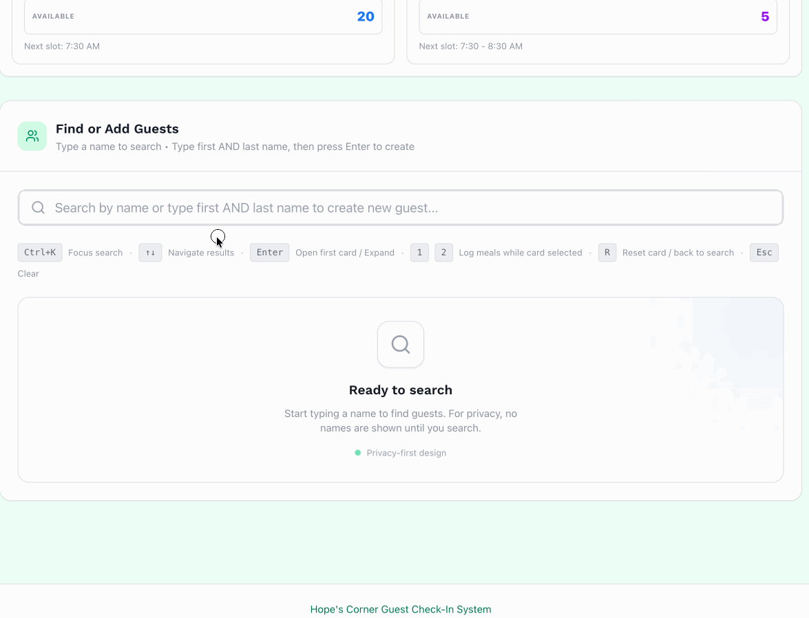
Once the meal button is clicked, the button will briefly change to a checkmark and the meal count on the card will update immediately.
5.2 Undoing a Mistake
If you accidentally clicked a meal button i.e. you assigned 2 meals when the guest only wanted 1:
- Click on the guest card to expand it.
- Click on the Undo button next to the meal count.
- This will remove the last meal(s) assigned to the guest.
- Go ahead and assign the correct number of meals.
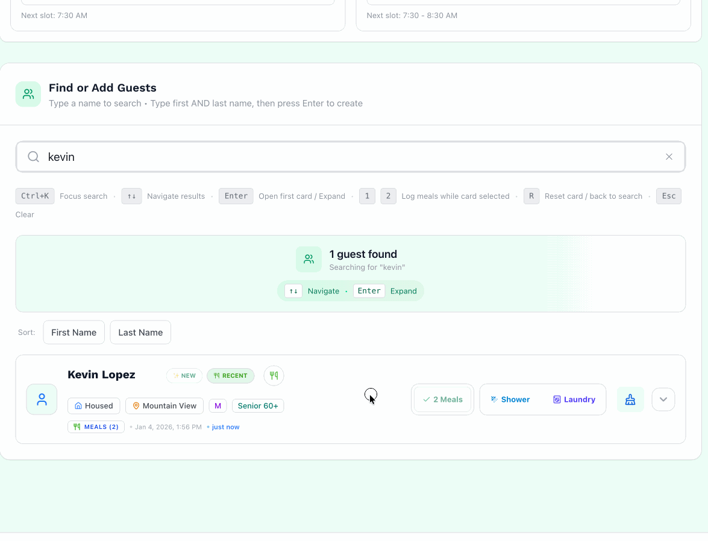
Undo will only work if the app is not refreshed or closed. Once the app is refreshed or closed, the meals are permanently logged.
5.3 Assigning extra meals for guests
If a guest returns later for more meals, the quick-add meal buttons on their card will be disabled.
To assign extra meals: 1. Expand the guest’s card by clicking on it. 2. Click on the Add Extra Meal button below the meal count. Decide if you want to add 1 extra meal or 2 extra meals.
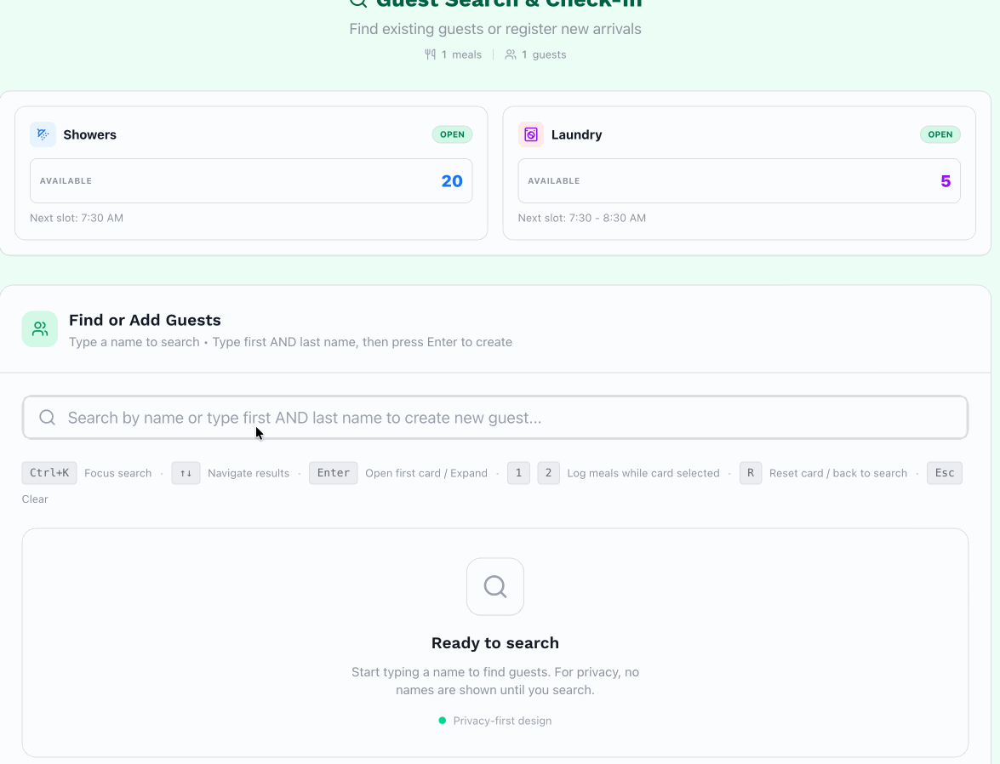
5.4 Assigning meals for Alternative Pick Ups
If a guest is doing an alternative pick up for their partner/family (and they are linked):
- See if the guest card has the linked icon with the number of linked guests.
- Expand the guest’s card by clicking on it.
- You will see the name of the guest that is linked.
- Click the meal button for 1 meal or 2 meals for the linked guest, but marks it as picked up by the current guest. It will not allow you to assign additional meals, although undo will work.
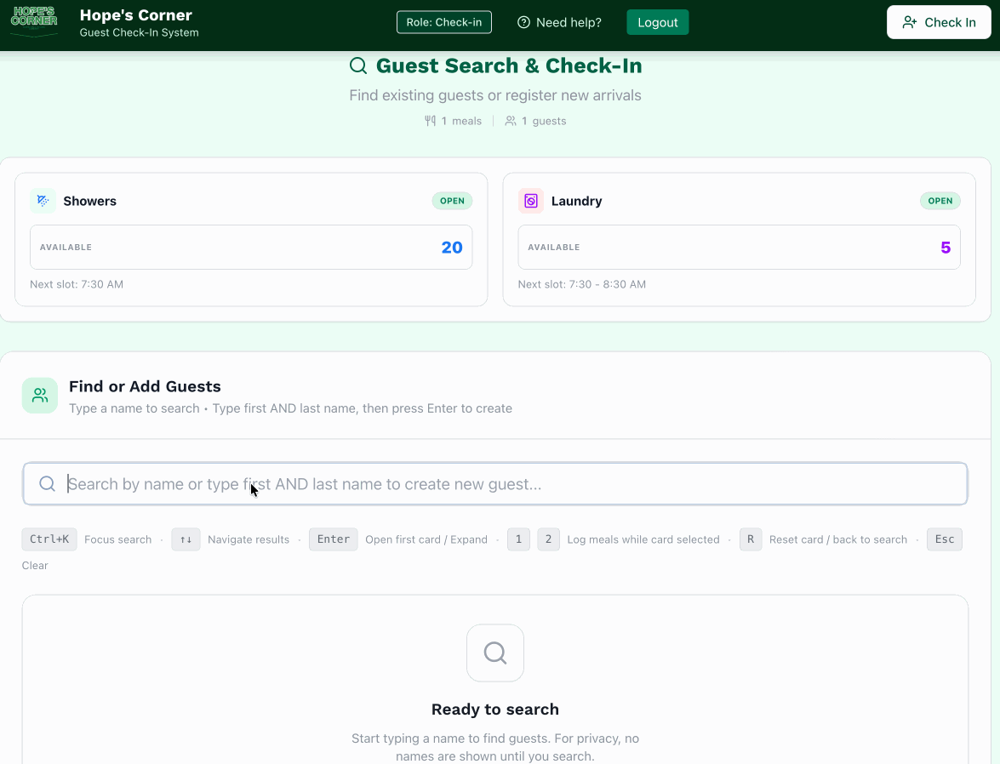
5.5 Linking Guests for Alternative Pick Ups
To link two guests (e.g., spouses or family members):
- Go to one guest’s profile and expand their card.
- Click on the purple Link Guest button (chain link icon).
- You will see a section of all the linked guests.
- Click on the + Link guest button.
- Search for the other guest’s name.
- Clicking the desired guest’s name will link them.
- You should see the linked guest in the linked guest section. Also, the guest card will now show the linked icon with the number of linked guests.
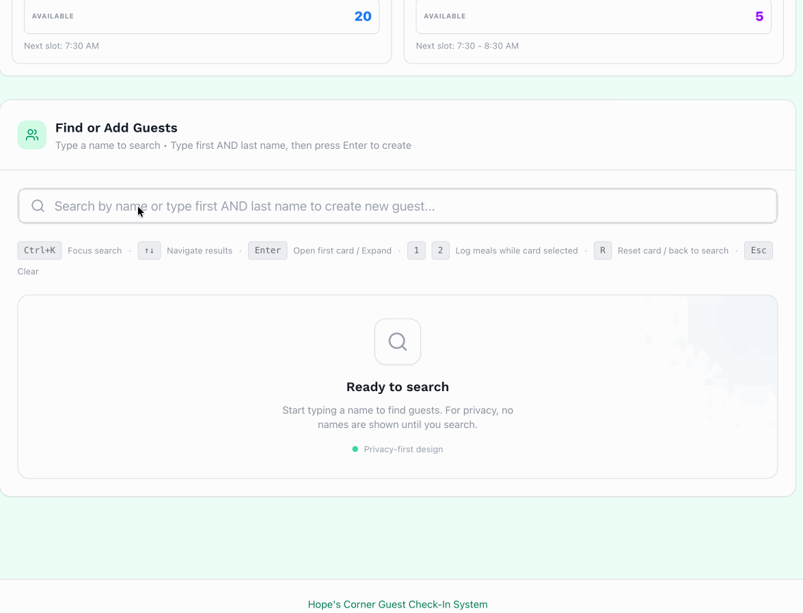
A maximum of 3 guests can be linked to another guest.
6 Shower & Laundry Services
To sign a guest up for a shower or laundry:
- Search for the guest who requested a shower and/or laundry.
- Click the Shower or Laundry button in the quick-add section of their card.
- Showers: Shows the next available slot. Click ‘Book time slot’ to assign it to the guest, then let the guest know their assigned time.
- Laundry: Shows the next available slot. Click ‘Book time slot’ to assign it to the guest, then let the guest know their assigned time.
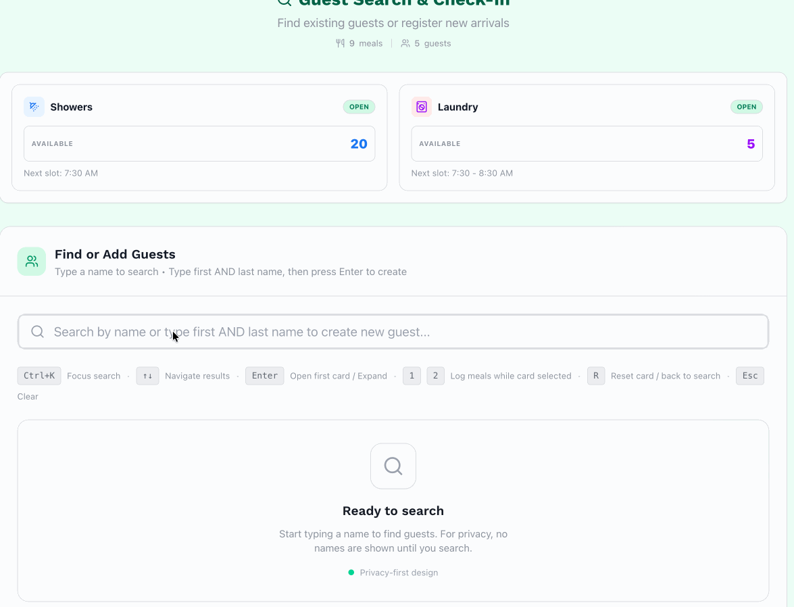
If the list is full for shower, the app will let you know to add the guest to the waitlist. We do not have any laundry waitlist at this time.
7 Guest Management
7.1 Editing a Guest Profile
To update a name, notes, or stats:
- Find and expand the guest’s card.
- Click the “Edit” icon.
- Make your changes (e.g., fix a spelling mistake or swap the first and last names).
- Click “Save”.
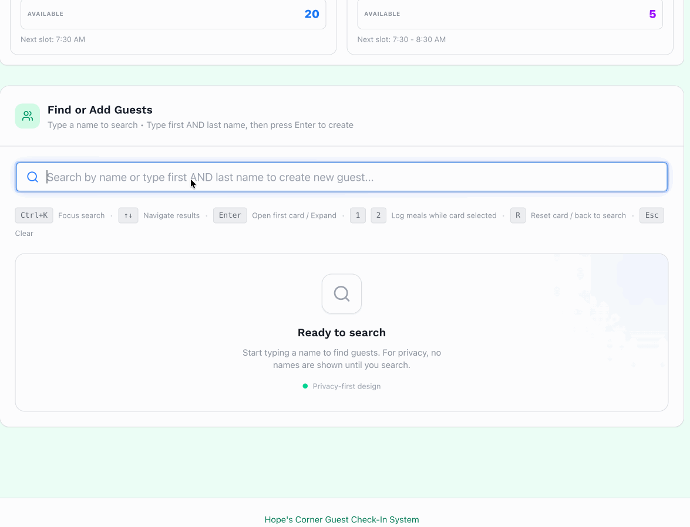
7.2 Banned guests
Guests can be banned from all services or from specific services (e.g., showers/laundry only).
If guests are banned, you will not be able to assign them the services they are banned from. Let the shift captain know if a guest is causing problems.
If there is a blanket ban, this is what it will look like:
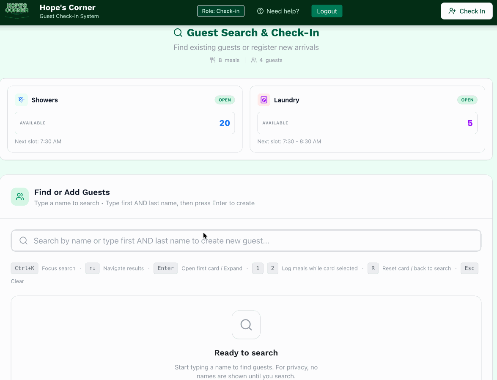
If they are banned just from Showers/Laundry, you should still be able to assign them meals. This is what it will look like:
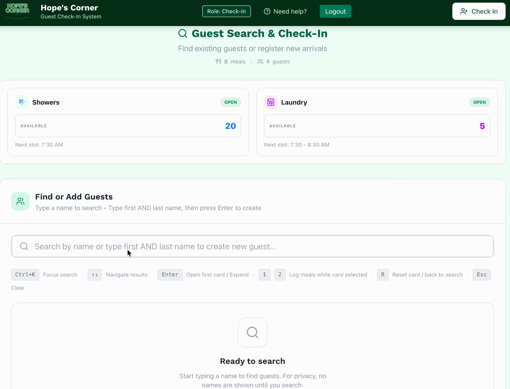
8 Viewing Stats
To see how many meals have been served today:
- Look at the top section on the Guest Search & Check-In screen.
- You will see in real time the number of meals served today along with the number of unique guests served.
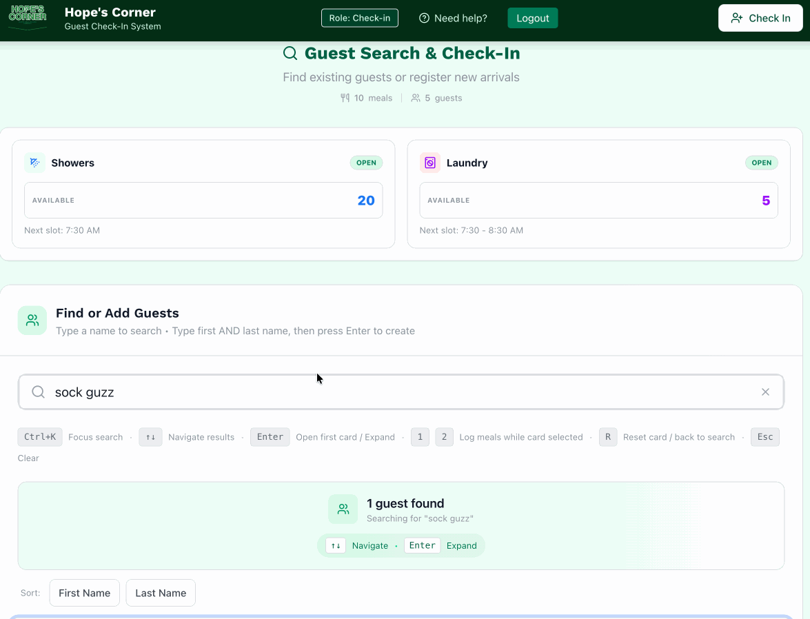
Thank you for volunteering at Hope’s Corner!